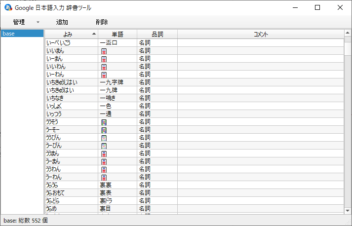

Google 日本語入力利用ノート¶
Google 日本語入力 Windows 版について綴る。これがあると日本語混じりのテキスト入力作業の効率が向上することが Windows 既定の Microsoft IME よりも期待できる。
次のような特徴および機能がある。詳しくは上述の公式サイトを参照するといい：
強力な補完機能
豊富な語彙
特殊変換
ユーザー辞書
インストール¶
Google 日本語入力 のページからインストーラーをダウンロードする。
インストーラーを実行する。
Windows 既定の Microsoft IME の代わりに Google 日本語入力が機能するという理解でいい。
Tip
インストール後、初回起動時にダイアログが表示され、ちょっとした設定ができる。これはこの後でも設定できるので細かい項目は手をつけずに OK でいい。とにかく、インストール完了直後に Google 日本語入力が IME として有効になっていればいい。
IME としての利用方法¶
エディットコントロール上でキーを押すことで Microsoft IME と同様に用いる。文字入力をしている途中に、
Space を押すと変換候補一覧がポップアップ表示される。
Tab を押すと補完候補一覧がポップアップ表示される。
設定によるが、MS IME 同様に変換中は次のキー操作でコマンドを実行することが可能だ：
コマンド |
キーバインド |
|---|---|
キャンセル |
Backspace, Esc, Del, Ctrl + G, Ctrl + Z, etc. |
次候補を選択 |
↓, Ctrl + X, 変換, Space のいずれか |
前候補を選択 |
↑, Ctrl + E, Shift + 変換, Shift + Space, etc. |
次候補ページへ移動 |
Shift + ↓, PageDown のいずれか |
前候補ページへ移動 |
Shift + ↑, PageUp のいずれか |
確定 |
Enter, etc. |
文字の種類を変換したい場合は、これも MS IME 同様に、次のキーバインドが有効だ：
コマンド |
キーバインド |
|---|---|
ひらがなに変換 |
Ctrl + U, etc. |
全角カタカナに変換 |
Ctrl + I, etc. |
全角英数に変換 |
Ctrl + P, etc. |
半角に変換 |
Ctrl + O, etc. |
半角英数に変換 |
Ctrl + T, etc. |
最後に、空白文字を挿入したい場合には次で実行するのが確実だ：
コマンド |
キーバインド |
|---|---|
半角スペースを入力 |
Ctrl + Space |
全角スペースを入力 |
Ctrl + Shift + Space |
他には変換部分の境界を操作するコマンドなど重要なものがあるが、紙幅の都合上割愛する。
メニュー表示方法¶
Google 日本語入力自身に対するコマンド一覧はタスクトレイアイコンのコンテキストメニューにある。メニューの表示方法を記す：
タスクトレイの Google 日本語入力アイコンを見つける。
その隣にある一文字アイコンを右クリック。コンテキストメニューが出現する。
Tip
一文字アイコンがバツジルシの場合、適当なエディットコントロールをアクティブにすること。
一文字アイコンは現在の入力モードを示している。例えば あ ならひらがなモード。
コンテキストメニューは以下の内容で固定と思われる：
設定¶
先述のメニューから を選択すると出現する Google 日本語入力 プロパティ ダイアログから当ツールの設定を行う。
一般¶
基本設定 の項目設定値を一度は確認しておくこと。
キー設定 はキーバインドと変換後文字列の写像を定義するものだ。 ローマ字テーブル 既定の写像がかなり意外なので一読するべきだ。いずれも 編集… ボタンを押すと、それぞれの編集画面が表示される。
辞書¶
主要な機能は ユーザー辞書の編集… だ。後ほど改めて述べる。
を有効にする。
を有効にする。
特殊変換 は無効にするものが重要だ。利用しない変換はすべて無効にする。そうしないと、文字変換中に余分な候補が出現する確率が上がり、編集時に無意味に苛だつことになる。次のものをすべてオフにするといい：
絵文字変換
日付変換
顔文字変換
計算機機能
郵便番号変換
さらに、己の日本語理解に相当の自信があれば 「もしかして」変換 も切っていい。
入力補助¶
ここは判断が難しい。とりあえず カーソル周辺に入力モードを表示する を有効にしておいて損はないだろう。
サジェスト¶
ここは完全の利用者の好みによって設定値を決める。メモリーとの兼ね合いもある。
入力履歴からのサジェスト自動表示を有効にする を有効にする。
システム辞書からのサジェスト自動表示を有効にする は無効にする。
リアルタイム変換を有効にする を無効にする。
プライバシー¶
個人環境ならば シークレットモード および プレゼンテーショ ンモード の項目はすべてオフでいい。
その他¶
既定の IME にしたいので、どちらのチェックボックスにもチェックを入れる。インストーラー実行直後に見逃した場合にはここで設定する。
ユーザー辞書¶
基本機能の補完、語彙では届かないような変換を定義するべきだろう。使用方法は説明不要だろう。
ローマ字テーブル¶
考え方は Emacs の expand-abbrev に近い。キーストロークで変換先の文字列を定義する。
例えばキーボードで z. とタイプすると、入力モードが直接入力でない限り、文字 … が即座に入力されたかのように振る舞う。
常識的なローマ字規則や、変換後の文字が日本語キーボードのキートップに印字されているなど、自然であるものを除いた（個人的に）覚えておきたい既定の変換を挙げる：
キーバインド |
変換後の文字 |
|---|---|
z. |
|
zh |
|
zj |
|
zk |
|
zl |
|
z[ |
|
z] |
|
xka |
|
xke |
|
バックアップ¶
以下の設定内容を エクスポート してファイルに保存し、適宜バックアップしておくこと：
における
から を実行
から を実行
から をすべての辞書に対して実行
環境を復元するときにはエクスポートしたテキストファイルを対応するコマンドでインポートする：
から
から を実行
から を実行
から または を実行

{kind=link}